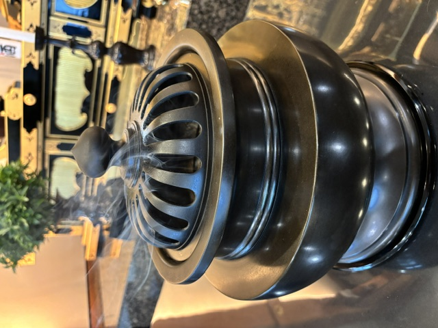

先祖供養・法事・葬儀のご相談
ご先祖や故人を大切に思う気持ちを、日蓮正宗の信仰と儀式に則って。妙本寺では、住職を中心に、信徒もともに皆さまのお話を伺います。

先祖供養・法事・葬儀を、まず相談から。
何を準備すればよいか分からない段階でも構いません。宗教上の儀式や法要については、住職が事情を伺いながらご案内します。
相談したいことから進めます
先祖供養・法事・葬儀について、知りたい内容に近いところからご覧ください。具体的な日時・準備・儀式の内容は、ご家庭の事情に応じて妙本寺へご確認ください。
日蓮正宗における追善供養
日蓮正宗公式ホームページでは、寺院は仏・法・僧の三宝がそなわる信仰の道場であり、正しい教えを伝えるとともに、先祖の追善供養を行う役割を担うと説明されています。
また彼岸会の説明では、自らが日々の信心修行に励み、その功徳をもって先祖の追善供養をすることが示されています。盂蘭盆会においても、御本尊のもとで信心に励み、その功徳を先祖に回向すること、塔婆を建立して追善供養する意義が説かれています。
根拠：日蓮正宗公式ホームページ「信仰の実践」「主な行事」
先祖供養・塔婆供養
先祖を思い、寺院で追善供養する
日蓮正宗では、日々の信心を大切にしながら、春秋の彼岸会や盂蘭盆会などにも寺院へ参詣し、先祖の追善供養を行います。公式資料では、塔婆供養についても、妙法蓮華経の功徳を故人・先祖へ回向する意義が示されています。
「何をすればよいか分からない」段階からご相談ください
命日、お盆・お彼岸、塔婆、納骨、先祖代々の供養など、事情はご家庭ごとに異なります。まず状況をお聞きし、妙本寺で行うこと、必要な準備などを住職に確認しながらご案内します。
法事・追善法要について
故人の追善のための法要は、単なる形式ではなく、御本尊のもとで読経・唱題し、故人へ功徳を回向する大切な機会です。日蓮正宗の寺院では、参詣する信徒のために法要・儀式を執行し、信行を深める道場としての役割を担っています。
ご家庭の事情や故人との関係などを伺ったうえで、妙本寺住職へご相談ください。ウェブサイトでは一律の手順を断定せず、実際の法要は寺院の指導に沿ってご案内します。
葬儀について
日蓮正宗では、葬儀を含む宗教上の儀式は、日蓮大聖人以来の仏法と宗門の化儀に則って行うことを大切にしています。日蓮正宗の公式資料では、所属寺院の住職・主管が信徒の信仰上の師匠として位置づけられています。
ご家族が亡くなられたとき、あるいは危篤などで葬儀について事前に確認したいときは、できるだけ早い段階で妙本寺へご連絡ください。葬儀社を決める前・具体的な段取りが分からない段階でもご相談いただけます。実際の儀式・読経・日程等については住職の指導に従って進めます。
※葬儀の個別手順・作法は事情により異なるため、このページでは日蓮正宗公式資料で確認できる原則を中心に掲載しています。
妙本寺住職・信徒がお話を伺います
先祖供養、法事、葬儀について「誰に聞けばよいか分からない」「日蓮正宗のやり方を知りたい」「まだ信徒ではないが相談したい」という段階でも、まず妙本寺へご相談ください。
宗教上の儀式や法要についての最終的なご案内は住職が行います。信徒も、初めて寺院へ来られる方の不安を少しでも和らげられるよう、参詣や相談の入口でお話を伺います。
電話 078-861-4144メールで相談お問い合わせ・アクセスこのページを家族や身近な方へ
必要としている方へ、このページのURLを共有できます。